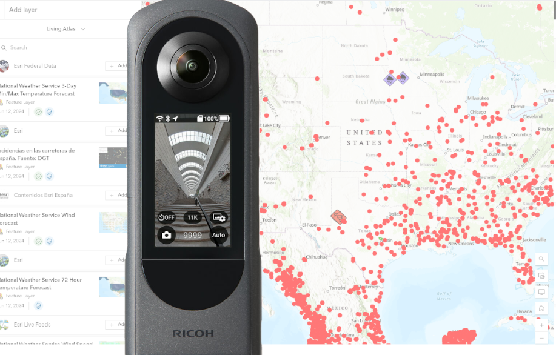
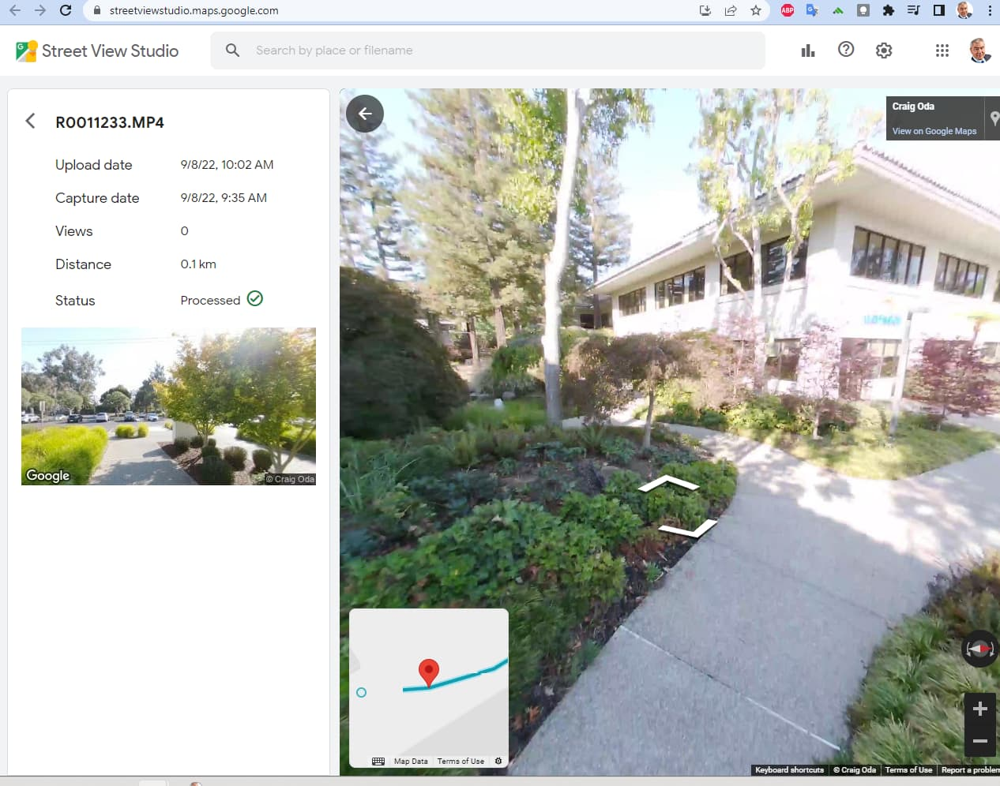
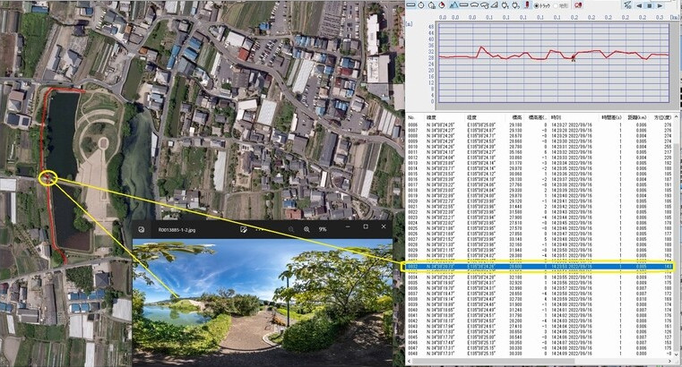

RICOH THETA IMU and GNSS Sensors

RICOH THETA cameras are widely used to document the condition of streets, buildings, trails, power lines, construction sites and other types of infrastructure. THETA 360° images are used in virtual tours or overlayed onto maps.
Excellent image quality, low cost, and ease-of-use make RICOH THETA cameras an excellent choice for projects requiring visual documentation of large areas.
In addition to taking single and interval images, people also use video frame extraction to easily take thousands of images.
RICOH THETA cameras are started be used in Geographic Information Systems (GIS)1 Although technologies like LiDAR and GPS Real-Time Kinematic (RTK) provide superior accuracy, the RICOH THETA X and Z1 can be used to supplement these data sources. RICOH THETA cameras are quick to setup, cheaper than traditional GIS equipment and may be good enough for some applications.
Video Frame Extraction Example
In the example below, 8K 360° video is taken at 10fps by simply walking around with the camera held overhead. The individual frames are automatically placed on a map using the internal GPS data, compass, and orientation sensor data.

Process to Attach GNSS Data to 360° Images
| Shooting Method | Where GNSS Data is Saved | How GNSS Data is Recorded |
|---|---|---|
| Z1 single or interval shooting of indoor / outdoor still images on map | metadata in Exif format Easy to extract | THETA WebAPI accepts GPS data |
| X single or interval shooting | metadata in Exif format | X internal GNSS technology can write metadata inside of camera. Alternately, the same API as the Z1 can be used to write coordinates |
| 8K video frame extraction | Data is stored in a separate CaMM track and needs to be matched | X has 8K low fps video with onboard GPS and IMU stored in video metadata |
Still Image and Separate GPS Data File Example
The example below is from community member Toyo Fujita.

Hot Tip 🌶️
RICOH THETA cameras include an internal compass that will record the camera orientation. However, if the compass requires calibration, compass information such as PoseHeadingDegrees and GPSImgDirection will not be recorded.
There is an easy fix. Jump to the Compass and Orientation section to get more information and see videos how you can easily recalibrate the compass for both Z1 and X.
Please note, a warning icon should show on the LCD for both the Z1 and the X. But only if your firmware is up-to-date. THETA X needs to be 2.40.0 or later (more information). RICOH always strongly recommends updating to the latest firmware version.
-
Refer to the U.S. Geological Survey for more information on GIS. https://www.usgs.gov/faqs/what-geographic-information-system-gis ↩